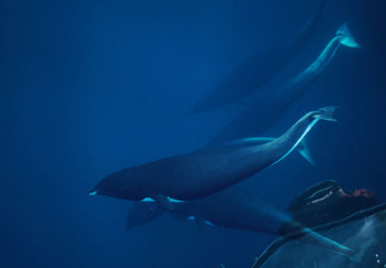

Gift Certificates
Any Dollar amount!
For any Stagnaro Trip
Call (831) 427-0230
Gift certificate doesn't guarantee a spot on a specific trip. Reservations required
Dolphins & Porpoises

Pacific White-sided Dolphin Lagenorhynchus obliquidens
These acrobats of the sea can be found in groups of over a thousand and are often the highlight of our Monterey whale watching trips. These generally smaller Dolphins (7′) often exhibit behaviors that still dazzle even the boat captains and crew. With high aerial jumps and flips they will give you all that you and your camera can capture.
The Pacific White-sided Dolphin has three tones of color. The chin, throat and belly are creamy white. The beak, flippers, back, and dorsal fin are a dark gray. There are light gray patches on the sides and a further light gray stripe running from above the eye to below the dorsal fin where it thickens along the tail stock. A dark gray ring surrounds the eyes. The Pacific White-sided Dolphin is extremely active and mixes with many of the other cetacean species to be found in the north Pacific, Monterey Bay. It also readily approaches boats and bow-rides. Large groups are common; on average 90 individuals per group but super groups of more than 3,000 have been recorded. Prey is mainly hake, anchovies, squid, herring, salmon and cod.
OUTER BAY Trips: December through April
This 3-4 hour trip mostly focuses on the annual migration of the California Gray Whale. Approximately 20,000 whales pass by the Santa Cruz coast south and then north again in a 5-month period. Peak migration usually occurs mid January and mid March. There is also an increased chance of spotting Killer Whales in March, April, and May.
RISSO’S DOLPHIN: COMMON

Risso's Dolphin Grampus griseus
This larger variety of Dolphin can usually be easily identified by their large dorsal fin and blunt shaped head. These deep divers feed mostly on squid.
The species’ common name is from Mr. Risso who described a specimen to Cuvier on which Cuvier made his first description. Another common name for Risso’s Dolphin is the Grampus (also the species genus), although as a common name this was historically used for the Orca It is found worldwide in temperate and tropical waters, usually in deep waters rather than close to land. As well as the tropical parts of the Indian, Pacific and Atlantic Oceans, The population around the continental shelf of the United States has been recorded to be in excess of 60,000. In the Pacific a census recorded 175,000 individuals in eastern tropical waters and 85,000 in the west. No global estimate of population exists.
COMMON DOLPHIN: FAIRLY COMMON

Short-beaked Common Dolphin Delphinus delphis
Common Dolphins can be observed in very large groups and are generally found in warmer waters. They are found worldwide.
OUTER BAY Trips: April through November
This 3-4 hour trip focuses mostly on the Humpback Whale. The local herd comes to Monterey Bay and the central coast for seasonal feeding. They feed on anchovies, sardines, and krill (shrimp like crustaceans). There is also an increased chance of spotting Blue whales in Summer and Fall.
The Short-beaked Common Dolphin (Delphinus delphis) is a species of Common Dolphin. It has a larger range than the Long-beaked Common Dolphin (D. capensis), occurring throughout warm-temperate and tropical oceans, with the possible exception of the Indian Ocean. There are more Short-beaked Common Dolphins than any other dolphin species in the warm-temperate portions of the Atlantic and Pacific Oceans. The color pattern on the body is unusual. The back is dark and the belly is white, while on each side is an hourglass pattern colored light grey, yellow or gold in front and dirty grey in back.
BOTTLENOSE DOLPHIN: FAIRLY COMMON
The one most people are familiar with “flipper” generally a warmer water species are more common in the bay since the El Niño in the early 1980’s. Bottlenose seem to be more common in the northern or Santa Cruz side of the bay. These frequent bowriders can sometimes be seen on our inner bay sunset cruise just outside the surf chasing feed.
NORTHERN RIGHT WHALE DOLPHINS: COMMON

Northern Right Whale Dolphin Lissodelphis borealis
Found in the cooler North Pacific, these Dolphins are unique in that they have no dorsal Fin. They are often found mixed with other species of dolphin. They are very dark in color.
DALL’S PORPOISE: COMMON

Dall’s Porpoise Phocoenoides dalli
Dall’s Porpoise are painted black and white. Visitors on their first trip often mistakenly call them baby Killer Whales. They will often zigzag around at great speed on or just below the surface of the water creating a spray called a “rooster tail”. They may appear and disappear quite suddenly. The fastest of all small cetaceans, Dall’s Porpoises can swim at up to 55 km/h, almost as fast as the Orca. The porpoises will approach boats and will bow- and stern-ride, but may lose interest, unless the boat is traveling quickly.
Dall’s Porpoises appear in small groups (about 2-10 in number). The groups appear not to be tight knit and may aggregate together at good feeding grounds. On very rare occasions a thousand or more individual may be seen at the same time. They feed on a variety of fish and cephalopods. Shoals of fish such as herring, anchovies and mackerel are common meals.
HARBOR PORPOISE: COMMON
Harbor Porpoise are found year round in shallow coastal areas and are very shy around boating traffic. Rarely does a person get more than one or two glimpses.
Book your trip today! Book online now or call (831) 427-0230


Gift Certificates
Any Dollar amount!
For any Stagnaro Trip
Call (831) 427-0230
Gift certificate doesn't guarantee a spot on a specific trip. Reservations required